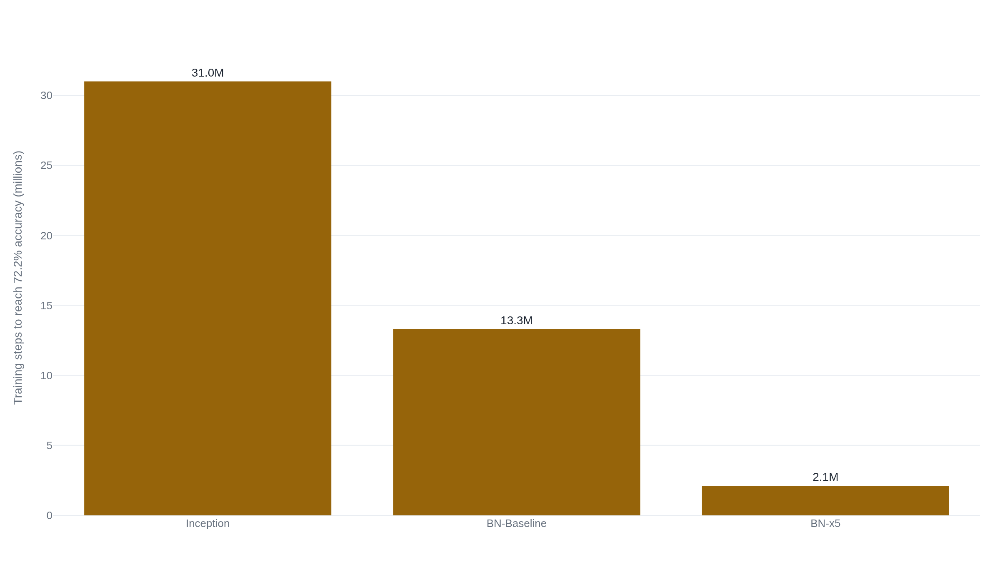

Batch normalization's own paper never measured internal covariate shift
The paper credited its speedup to a change in activation statistics it never actually measured, and the team that finally measured it found batch-normalized networks carry just as much of that change as ordinary ones.
Batch Normalization: Accelerating Deep Network Training by Reducing Internal Covariate Shift
Read the paperTraining Deep Neural Networks is complicated by the fact that the distribution of each layer's inputs changes during training, as the parameters of the previous layers change. This slows down the training by requiring lower learning rates and careful parameter initialization, and makes it notoriously hard to train models with saturating nonlinearities. We refer to this phenomenon as internal covariate shift, and address the problem by normalizing layer inputs. Our method draws its strength from making normalization a part of the model architecture and performing the normalization for each training mini-batch. Batch Normalization allows us to use much higher learning rates and be less careful about initialization. It also acts as a regularizer, in some cases eliminating the need for Dropout. Applied to a state-of-the-art image classification model, Batch Normalization achieves the same accuracy with 14 times fewer training steps, and beats the original model by a significant margin. Using an ensemble of batch-normalized networks, we improve upon the best published result on ImageNet classification: reaching 4.9% top-5 validation error (and 4.8% test error), exceeding the accuracy of human raters.1
A layer's inputs move every time the layer below it updates
A deep network is trained one gradient step at a time, and every step changes every layer at once. That creates a dependency each layer cannot see: the fifth layer's inputs are the fourth layer's outputs, and the fourth layer just changed under the fifth layer's feet. Ioffe and Szegedy named this the problem their paper attacks. The distribution of a layer's inputs shifts as the parameters producing them shift, which forces the layer above to keep readjusting to a moving target rather than converging on one. Their diagnosis was that this is what makes deep networks need small learning rates and careful initialization. It is also, they argued, what makes networks built from saturating nonlinearities, sigmoids that flatten toward 0 or 1, especially hard to train. Once an activation drifts into a nonlinearity's flat region, its gradient collapses and learning there stalls.1
The direct fix would be to whiten each layer's inputs the way a statistician whitens any input, decorrelate and rescale them to zero mean and unit variance before every layer sees them. The paper rejects this outright: full whitening is expensive to compute and not everywhere differentiable, so it cannot sit inside a network trained by backpropagation.1 In its place, Ioffe and Szegedy proposed a cheaper, per-dimension normalization computed from each training mini-batch. That normalization is Batch Normalization, and reducing what the paper calls internal covariate shift is the reason it gives for why the normalization helps.
What batch normalization actually computes
The computation is exact and small. For a mini-batch of m activations at one unit, compute the batch mean and variance, subtract and divide to standardize, then apply a learned scale and shift so the layer keeps the capacity to undo the normalization if that serves the loss better.1
- \hat{x}_ithe activation standardized against its own mini-batch.
- \mu_B, \sigma_B^2the mean and variance computed fresh from the current mini-batch of size m.
- \gamma, \betaa learned scale and shift, trained like any other parameter.
- y_iwhat the next layer actually receives.
Two choices in that computation are easy to miss and matter later. First, the paper places the transform on the pre-activation x = Wu + b, not on the raw output of the previous layer, because a linear combination of the layer's inputs is more likely to have a symmetric, non-sparse distribution.1 Second, the learned \gamma and \beta mean the transform is not actually trying to hold every layer's inputs at zero mean and unit variance through training. It is trying to hold them at whatever mean and variance minimize the loss, standardized first only so that value is reachable without the scale of the inputs fighting the optimizer. At test time there is no mini-batch to compute statistics from, so the network switches to a fixed estimate of the population mean and variance, folded into one linear transform so the output depends only on the input, deterministically.1
Why Ioffe and Szegedy believed normalizing fixed it
The paper defines its central term precisely once: internal covariate shift is "the change in the distribution of network activations due to the change in network parameters during training."1 Batch normalization addresses it, on this account, by fixing each unit's activation statistics at every layer, every step, so the layer above always sees inputs drawn from close to the same distribution regardless of how the layers below have changed. A layer that no longer has to track a moving target should converge faster and tolerate a larger learning rate, because a step sized for a stable input distribution is less likely to be sized wrong for tomorrow's.
The paper's evidence for that story is a single demonstration. On a three-layer, fully connected network with sigmoid activations, trained on MNIST, the authors plot how one activation's distribution moves over the course of training. In the unnormalized network, the distribution's mean and variance "change significantly over time." In the batch-normalized network, the same statistics stay "much more stable."1 The batch-normalized network also reaches higher accuracy, faster, on the same task. The paper reports them side by side and treats the second as caused by the first, without a third measurement that isolates one from the other. No experiment in the paper varies the activation stability while holding the optimization procedure fixed, or the reverse.
The one attempt at a formal argument is offered as a hedge, not a proof. Under an idealized assumption, that activations are Gaussian and uncorrelated, the authors show that batch normalization may push a layer's Jacobian toward having singular values close to one. That would keep the gradient from shrinking or exploding as it passes through. They immediately note the assumption does not hold: "In reality, the transformation is not linear, and the normalized values are not guaranteed to be Gaussian nor independent, but we nevertheless expect Batch Normalization to help."1 That is as far as the paper's own argument reaches: an expectation stated under an assumption the authors say does not hold, never checked against the network as actually trained.
The explanation traveled further than the evidence for it did. A year later, Ba, Kiros, and Hinton introduced Layer Normalization, a variant that standardizes across a layer's units for one training case instead of across a batch of cases for one unit, motivated mainly by batch normalization's dependence on mini-batch size and its awkward fit to recurrent networks.2 Their own case for why normalizing helps restates Ioffe and Szegedy's framing rather than testing it: "changes in the output of one layer will tend to cause highly correlated changes in the summed inputs to the next layer... This suggests the 'covariate shift' problem can be reduced by fixing the mean and the variance of the summed inputs."2 For roughly three years after batch normalization was published, the field extended its explanation. Nobody with a competing result had yet tested it.
The results nobody disputes
Whatever explains it, the speedup itself is not in question anywhere in this record. Applied to Inception on ImageNet, a batch-normalized version reached the original network's 72.2% top-5-complement accuracy in a fraction of the training steps. Raising the learning rate on top of batch normalization, the paper's BN-x5 variant, widened the gap further.

Most of that gap came from normalization alone, at the original learning rate: BN-Baseline needed 13.3 million steps, well under half of Inception's 31.0 million. The rest came from what normalization let the authors do next. Raising the learning rate five-fold on the unmodified network was not an option; the paper reports that the same increase applied to original Inception "caused the model parameters to reach machine infinity," meaning it diverged.1 Batch normalization tolerated it, and more.
The sigmoid result is the sharpest single data point, because it isolates the failure mode the paper's motivation names directly. Plain Inception built from sigmoid activations never exceeded 1-in-1000 accuracy on ImageNet's 1,000 classes, chance performance; the same architecture with batch normalization reached 69.8%.1 Batch normalization turned a network that could not train at all into one that reached competitive accuracy. None of this is contested anywhere in the later literature. Later work took the result as given and tested only the explanation for it.
What Santurkar and colleagues measured
Three years after publication, Santurkar, Tsipras, Ilyas, and Madry ran the test the original paper never ran: hold the training procedure fixed and vary only the distributional stability of the activations. They trained a VGG network on CIFAR-10 with batch normalization, then, after each batch-normalized layer, injected noise into every activation, drawn from a distribution with nonzero mean and non-unit variance that changed at every training step. The injection reintroduces, on purpose, the exact kind of shifting distribution batch normalization is supposed to remove.3
The noisy network trained about as well as the clean one. Without data augmentation, plain batch normalization reached 83% test accuracy and the noise-injected version tracked close behind, both far ahead of the 80% an unnormalized network reached under the same budget; with augmentation the comparable numbers were 92% against 88%.3 A network carrying deliberately unstable activation statistics matched the stable batch-normalized network's accuracy, well above the unnormalized network's.
Santurkar and colleagues then measured internal covariate shift directly, something the original paper never did. They defined it as the change in a layer's gradient before and after the layers below it are updated, the literal distance a parameter's training target moves out from under it in one step.3 By that measure, batch-normalized networks showed as much internal covariate shift as unnormalized ones during training, and often more, while continuing to train drastically faster.3 A separate experiment pushed the same point from another angle. Normalizing activations by their L1, L2, or L∞ norm instead of by batch statistics matched or beat batch normalization's optimization benefit. Those variants measurably increase distributional shift rather than reduce it.3
What they found instead was a property of the loss surface itself. They proved that, under mild conditions, batch normalization bounds how much the loss can change and how much its gradient can change as a function of a layer's inputs, a Lipschitz bound and a matching beta-smoothness bound.3 The benefit, they conclude, has little to do with the stability of layer inputs. It has to do with the curvature of the surface those inputs sit on. Batch normalization makes the loss landscape smoother, so a gradient step in the current direction stays a good step further than it would without normalization. That is why larger steps and higher learning rates survive.3 Their own summary of the comparison: "the widely believed connection between the performance of BatchNorm and the internal covariate shift is tenuous, at best."3
Two more explanations, and neither engages the other
Landscape smoothing is not the only account that replaced internal covariate shift, and the replacements do not agree with each other. Bjorck, Gomes, Selman, and Weinberger published the same year as Santurkar and colleagues. They independently rejected the covariate-shift story and located the benefit somewhere else entirely. Batch normalization, in their account, keeps activations from exploding as a large gradient step propagates through depth, which is what makes the large step survivable in the first place.4 Their evidence is a 110-layer ResNet on CIFAR-10. Unnormalized, it trains only at a learning rate of 0.0001 and takes roughly 2,400 epochs. With batch normalization it trains at 0.1, a thousand times higher, in roughly 165 epochs.4 They state their position on internal covariate shift plainly: "We do not claim that internal covariate shift does not exist, but we believe that the success of BN can be explained without it."4 Their paper does not cite Santurkar and colleagues' smoothness result at all.
Kohler and colleagues offered a third account, narrower in scope: batch normalization splits the optimization problem into separately optimizing a parameter vector's length and its direction, a decoupling a gradient method can exploit for provably faster convergence. They proved it for learning halfspaces and for networks with Gaussian inputs, settings restricted enough that the result does not extend to the general trained networks Santurkar and colleagues' bounds cover.5 Three groups rejected the same original explanation in the same period and produced three explanations that do not reduce to one another: a smoother loss surface, controlled activation growth, and decoupled length and direction. None of the three papers claims to subsume the others.
Batch normalization also causes the problem it's credited with solving
Every account above shares an assumption: that batch normalization stabilizes training. Yang and colleagues' mean-field analysis complicates that assumption directly, in a regime none of the other papers examined. In fully connected, batch-normalized networks with no skip connections, analyzed at initialization before any training step has run, gradient signals grow exponentially with depth, and the growth cannot be removed by tuning the initial weight variance or the choice of nonlinearity.6 Deep plain networks built this way are not trainable at large depth under standard initialization; keeping the network close to its linear regime reduces the explosion without removing it.6
This does not overturn Santurkar and colleagues' result. Their bounds describe the trained loss surface of networks built with the residual connections modern architectures actually use; Yang and colleagues describe the gradient statistics of plain networks at the single instant before training starts. The two findings sit in different regimes and are not in direct conflict. What the second result forecloses is the stronger, unconditional version of the first: batch normalization's stabilizing effect depends on depth and architecture rather than following from the normalization alone.
The account normalization work now builds on
By the time the field tried to remove batch normalization altogether, its working explanation had changed. Brock, De, Smith, and Simonyan built NFNets by replacing batch normalization with adaptive gradient clipping, scaled weight standardization, and a learnable per-branch residual scale, engineered substitutes for batch normalization's specific effects rather than a return to unregularized training.7 Explaining why a substitute was needed at all, they write: "Batch normalization smoothens the loss landscape... and this increases the largest stable learning rate."7 They cite Santurkar and colleagues for that sentence. They do not mention internal covariate shift. Their largest normalizer-free network, NFNet-F6, reached 86.5% ImageNet top-1 accuracy, a new state of the art at publication, and an NF-ResNet pretrained on 300 million labeled images outperformed its batch-normalized counterpart under the same pretraining.7 Batch normalization's practical value, in other words, persisted even into a paper built around removing it. Its original explanation did not make the trip.
By then, the gap had also been named as a pattern that ran wider than this one paper. Lipton and Steinhardt, writing about explanatory habits across machine learning scholarship, lead their section on unearned technical language with the batch normalization paper itself: "The exposition on internal covariate shift, starting from the abstract, appears to state technical facts. However, key terms are not made crisp enough to conclusively assume a truth value."8 They cite Santurkar and colleagues by name as evidence that "this explanation of batch normalization may be off the mark."8 For them, batch normalization is the clearest example of a pattern that runs wider than this one paper.
The corrected account reached practitioner explainer writing too. Kathuria's walkthrough of the debate makes a further point against the original story, on its own terms. A trained \gamma and \beta keep changing the activation distribution the normalization was supposed to hold still. The walkthrough summarizes Santurkar and colleagues' result as the field's working answer: "batch norm actually makes the loss surface smoother, which is why it works so well."9 One dissent to that consensus is on record but unread here. A 2021 paper claims new empirical evidence for a version of internal covariate shift against Santurkar and Bjorck's critiques. Its full text sits behind a paywall this record could not clear, so its evidence cannot be weighed here. Its claim is noted, not endorsed.
What the record supports
Two claims run through this paper, and the record since treats them very differently. The empirical one is untouched. Normalizing activations by mini-batch statistics lets a deep network train in far fewer steps, at far higher learning rates, and reach accuracy otherwise out of reach for a sigmoid network, and nobody in this record disputes those numbers. The causal one, that the benefit comes from reducing internal covariate shift, was tested directly once an operational measure existed for it, and failed that test. Batch-normalized networks showed as much distributional shift as unnormalized ones, sometimes more, while training faster regardless.
Batch normalization works. Internal covariate shift, as the paper that coined the term used it, was never measured in that paper and did not survive the first paper to measure it. What replaced it did not converge on a single account either: a smoother loss landscape, controlled activation growth, and decoupled length and direction all have independent evidence behind them, and depth and architecture decide when any of them holds. The version that reached the widest later citation, and the one the field's attempts to remove batch normalization had to engineer a replacement for, is landscape smoothness.7 A technique can be this well understood empirically and this unsettled about why, and both facts stay true for as long as practitioners keep citing the 2015 abstract for an explanation its own authors never tested.
Sources
- arXiv · Ioffe, Szegedy, "Batch Normalization: Accelerating Deep Network Training by Reducing Internal Covariate Shift" (ICML 2015)
- arXiv · Ba, Kiros, Hinton, "Layer Normalization" (2016)
- arXiv · Santurkar, Tsipras, Ilyas, Madry, "How Does Batch Normalization Help Optimization?" (NeurIPS 2018)
- arXiv · Bjorck, Gomes, Selman, Weinberger, "Understanding Batch Normalization" (NeurIPS 2018)
- arXiv · Kohler, Daneshmand, Lucchi, Zhou, Neymeyr, Hofmann, "Exponential Convergence Rates for Batch Normalization: The Power of Length-Direction Decoupling in Non-Convex Optimization" (AISTATS 2019)
- arXiv · Yang, Pennington, Rao, Sohl-Dickstein, Schoenholz, "A Mean Field Theory of Batch Normalization" (ICLR 2019)
- arXiv · Brock, De, Smith, Simonyan, "High-Performance Large-Scale Image Recognition Without Normalization" (ICML 2021)
- arXiv · Lipton, Steinhardt, "Troubling Trends in Machine Learning Scholarship" (2018)
- Paperspace Blog · Kathuria, "Intro to Optimization in Deep Learning: Busting the Myth About Batch Normalization"